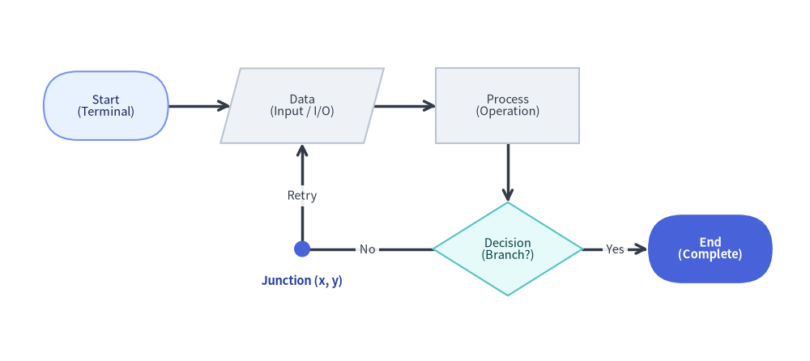
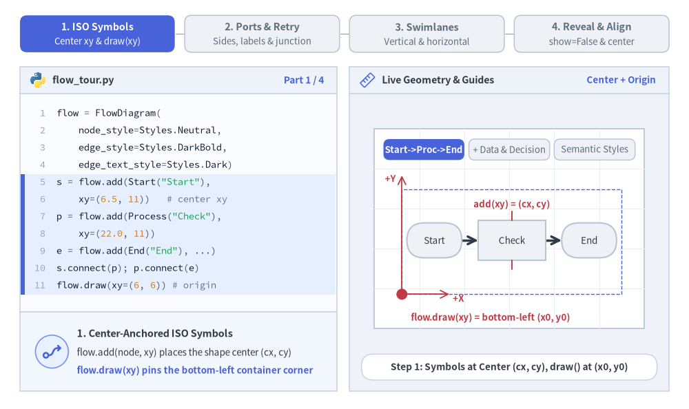
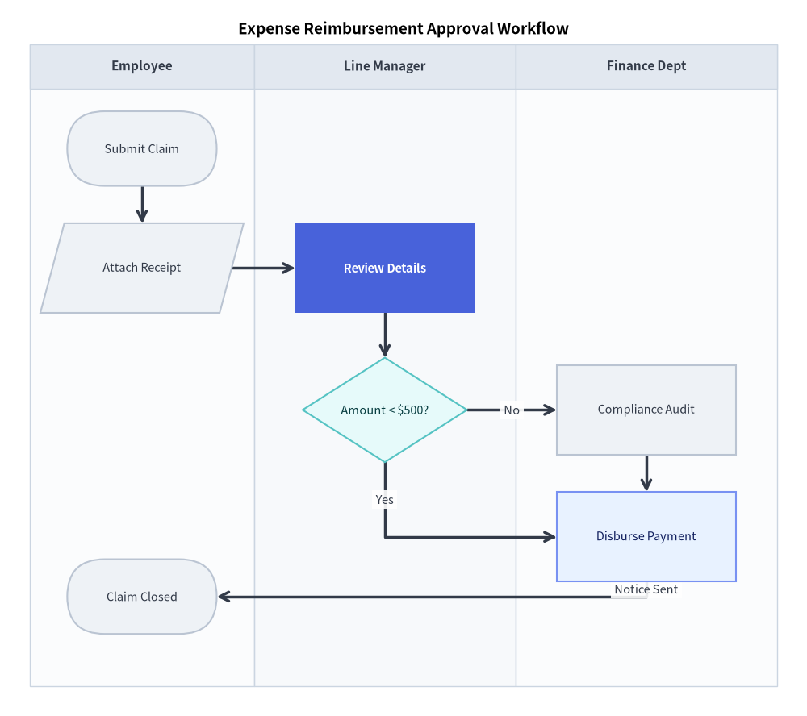
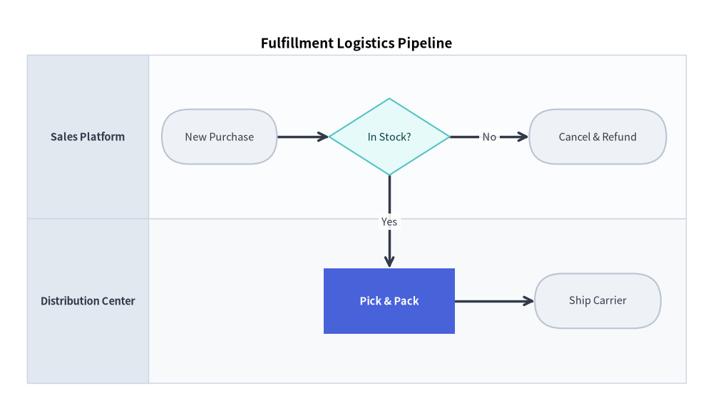

フロー図 (FlowDiagram): ISO フローチャートと部門横断スイムレーン
FlowDiagram は、ISO 5807 および JIS X 0121 規格に準拠した標準フローチャート記号を実装しており、統一されたグローバル座標平面を共有する部門横断のスイムレーンレイアウト（垂直列または水平行）をネイティブにサポートします。

Source Code
from drawlib.canvas import save, setup
from drawlib.diagrams.flow import Data, Decision, End, FlowDiagram, Process, Start
from drawlib.shapes import circle
from drawlib.styles import Colors, Styles
from drawlib.text import text
setup(width=130, height=58)
flow = FlowDiagram(
node_style=Styles.Neutral.patch(text_size=10.5),
edge_style=Styles.DarkBold,
edge_text_style=Styles.Dark.patch(text_size=10.5),
width=122.0,
height=50.0,
)
# 6 Standard Flowchart Symbol Classes: Start, Data, Process, Decision, Junction, End
s_start = flow.add(
Start("Start\n(Terminal)", width=20.0, height=11.0, style=Styles.PrimaryNeutral.patch(text_size=10.5)),
xy=(13.0, 37.0),
)
s_data = flow.add(Data("Data\n(Input / I/O)", width=23.0, height=12.0), xy=(44.5, 37.0))
s_proc = flow.add(Process("Process\n(Operation)", width=23.0, height=12.0), xy=(77.5, 37.0))
s_dec = flow.add(
Decision("Decision\n(Branch?)", width=24.0, height=15.0, style=Styles.SecondaryNeutral.patch(text_size=10.5)),
xy=(77.5, 14.0),
)
# Junction waypoint for orthogonal retry loop back to Data
j_retry = flow.junction((44.5, 14.0))
s_end = flow.add(
End("End\n(Complete)", width=20.0, height=11.0, style=Styles.PrimaryFlat, text_style=Styles.WhiteBold.patch(text_size=10.5)),
xy=(110.0, 14.0),
)
s_start.connect(s_data)
s_data.connect(s_proc)
s_proc.connect(s_dec, start_side="bottom", end_side="top")
s_dec.connect(s_end, label="Yes", start_side="right", end_side="left")
s_dec.connect(j_retry, label="No", start_side="left", end_side="right")
j_retry.connect(s_data, label="Retry", end_side="bottom")
flow.draw(xy=(4.0, 4.0))
# Highlight the zero-size Junction coordinate point (4 + 44.5 = 48.5, 4 + 14 = 18)
circle((48.5, 18.0), radius=1.3, style=Styles.PrimaryFlat)
text(
(48.5, 12.8),
"Junction (x, y)",
style=Styles.DarkBold.patch(text_size=10.5, text_color=Colors.Primary5),
)
save()
1. 基本概念と基本的な使い方
FlowDiagram は、ISO 5807 準拠の記号ノード（Start、Data、Process、Decision、End）を図形の中心 (cx, cy) で配置する一方、flow.draw(xy) はコンテナの左下 (x0, y0) 角（または align="center" 指定時は中央）を基準に配置します。明示的な側面ポート（start_side、end_side）、flow.junction() によるループバック、.fork() によるファンアウトバスを使って条件分岐を配線できるほか、単一の統一座標平面上に部門横断の "vertical"（垂直列）や "horizontal"（水平行）スイムレーン（add_lane）を重ねて描画できます。

Source Code
from __future__ import annotations
from drawlib.anim import Animation
from drawlib.canvas import save, setup
from drawlib.diagrams.flow import Data, Decision, End, FlowDiagram, Process, Start
from drawlib.icons import code as code_icons
from drawlib.icons import phosphor
from drawlib.lines import line
from drawlib.shapes import circle, rectangle
from drawlib.smartarts import SourceCode, SourceCodeStyles
from drawlib.styles import Styles
from drawlib.text import text
W, H = 138.0, 82.0
setup(width=W, height=H)
anim = Animation(fps=10.0, loop=0)
CODE_TEXT_SIZE = 10.0
PT_TO_CANVAS = W / 720.0
FONT_CANVAS = CODE_TEXT_SIZE * PT_TO_CANVAS
LINE_H = FONT_CANVAS * 1.8
PAD_Y = FONT_CANVAS * 1.2
CODE_STYLES = SourceCodeStyles.get("default", font_lang="en", text_size=CODE_TEXT_SIZE).patch(
box_style=Styles.Neutral.patch(shape_fill_color=(0, 0, 0, 0), shape_line_width=0),
)
PANE_HEADER = Styles.Neutral.patch(
shape_fill_color=(238, 243, 250),
shape_line_color=(203, 213, 225),
shape_line_width=1.2,
shape_r=0.0,
)
EDITOR_BODY = Styles.Neutral.patch(
shape_fill_color=(250, 252, 255),
shape_line_color=(203, 213, 225),
shape_line_width=1.2,
shape_r=0.0,
)
TAKEAWAY_BODY = Styles.Neutral.patch(
shape_fill_color=(242, 246, 253),
shape_line_color=(203, 213, 225),
shape_line_width=1.2,
shape_r=0.0,
)
STUDIO_BODY = Styles.Neutral.patch(
shape_fill_color=(239, 243, 249),
shape_line_color=(203, 213, 225),
shape_line_width=1.2,
shape_r=0.0,
)
PART_ITEMS = [
("1. ISO Symbols", "Center xy & draw(xy)"),
("2. Ports & Retry", "Sides, labels & junction"),
("3. Swimlanes", "Vertical & horizontal"),
("4. Reveal & Align", "show=False & center"),
]
def draw_step_bar(active_part: int) -> None:
"""Draw top 4-part progress bar (active_part is 1..4)."""
pill_w = 31.0
pill_h = 7.4
gap = 2.0
start_x = 4.0 + pill_w / 2.0
cy = 75.2
for idx, (label, sublabel) in enumerate(PART_ITEMS, start=1):
cx = start_x + (idx - 1) * (pill_w + gap)
if idx > 1:
prev_cx = cx - (pill_w + gap)
line(
(prev_cx + pill_w / 2.0 + 0.2, cy),
(cx - pill_w / 2.0 - 0.2, cy),
style=Styles.PrimaryBold if idx <= active_part else Styles.MutedThin,
)
if idx == active_part:
st = Styles.PrimaryFlat.patch(shape_r=1.4)
tst = Styles.WhiteBold.patch(text_size=10.3)
sub_tst = Styles.White.patch(text_size=9.5)
elif idx < active_part:
st = Styles.PrimaryNeutral.patch(shape_r=1.4, shape_line_width=1.1)
tst = Styles.PrimaryBold.patch(text_size=10.3)
sub_tst = Styles.Primary.patch(text_size=9.5)
else:
st = Styles.Neutral.patch(shape_r=1.4, shape_line_width=1.1)
tst = Styles.MutedBold.patch(text_size=10.3)
sub_tst = Styles.Muted.patch(text_size=9.5)
rectangle((cx, cy), width=pill_w, height=pill_h, style=st)
text((cx, cy + 1.35), label, style=tst)
text((cx, cy - 1.55), sublabel, style=sub_tst)
def draw_left_pane(
active_part: int,
code_lines: list[str],
hl_range: tuple[int, int],
icon_fn: object,
summary_title: str,
summary_line1: str,
summary_line2: str,
) -> None:
"""Draw left Python code editor + bottom concept takeaway card."""
x0, w = 4.0, 63.5
cx = x0 + w / 2.0
top_y = 63.2
header_h = 5.4
editor_h = 43.8
takeaway_h = 15.8
rectangle((cx, top_y + header_h / 2.0), width=w, height=header_h, style=PANE_HEADER)
code_icons.python((x0 + 3.6, top_y + header_h / 2.0), width=3.4, style=Styles.Neutral)
text(
(x0 + 6.5, top_y + header_h / 2.0),
"flow_tour.py",
style=Styles.DarkBold.patch(text_size=10.2, halign="left"),
)
text(
(x0 + w - 2.6, top_y + header_h / 2.0),
f"Part {active_part} / 4",
style=Styles.PrimaryBold.patch(text_size=9.8, halign="right"),
)
rectangle((cx, top_y - editor_h / 2.0), width=w, height=editor_h, style=EDITOR_BODY)
hl_start, hl_end = hl_range
hl_top = top_y - PAD_Y - hl_start * LINE_H
hl_bot = top_y - PAD_Y - (hl_end + 1) * LINE_H
hl_cy = (hl_top + hl_bot) / 2.0
hl_h = hl_top - hl_bot
rectangle(
(cx, hl_cy),
width=w - 0.6,
height=hl_h,
style=Styles.Neutral.patch(shape_fill_color=(229, 239, 255), shape_line_width=0),
)
rectangle(
(x0 + 0.55, hl_cy),
width=0.9,
height=hl_h,
style=Styles.PrimaryFlat.patch(shape_line_width=0),
)
SourceCode.draw(
xy=(x0, top_y),
width=w,
code="\n".join(code_lines),
styles=CODE_STYLES,
code_lang="python",
show_linenum=True,
align="top_left",
)
take_cy = 3.6 + takeaway_h / 2.0
rectangle((cx, take_cy), width=w, height=takeaway_h, style=TAKEAWAY_BODY)
circle(
(x0 + 6.4, take_cy),
radius=3.3,
style=Styles.PrimaryNeutral.patch(shape_line_width=1.2),
)
icon_fn((x0 + 6.4, take_cy), width=3.8, style=Styles.PrimaryBold) # type: ignore[operator]
text(
(x0 + 11.4, take_cy + 3.6),
summary_title,
style=Styles.DarkBold.patch(text_size=10.4, halign="left"),
)
text(
(x0 + 11.4, take_cy - 0.2),
summary_line1,
style=Styles.Dark.patch(text_size=9.7, halign="left"),
)
text(
(x0 + 11.4, take_cy - 3.8),
summary_line2,
style=Styles.PrimaryBold.patch(text_size=9.6, halign="left"),
)
def draw_geometry_studio(param_badge: str, footer_caption: str) -> tuple[float, float]:
"""Draw right geometry lab shell, inner coordinate sheet with subtle grid, and footer."""
x0, w = 70.0, 64.0
cx = x0 + w / 2.0
top_y = 63.2
header_h = 5.4
body_h = 59.6
rectangle((cx, top_y + header_h / 2.0), width=w, height=header_h, style=PANE_HEADER)
phosphor.ruler((x0 + 3.6, top_y + header_h / 2.0), width=3.4, style=Styles.Primary)
text(
(x0 + 6.5, top_y + header_h / 2.0),
"Live Geometry & Guides",
style=Styles.DarkBold.patch(text_size=10.2, halign="left"),
)
text(
(x0 + w - 2.6, top_y + header_h / 2.0),
param_badge,
style=Styles.PrimaryBold.patch(text_size=9.6, halign="right"),
)
rectangle((cx, 3.6 + body_h / 2.0), width=w, height=body_h, style=STUDIO_BODY)
sheet_cx, sheet_cy = cx, 36.2
sheet_w, sheet_h = 54.0, 40.0
sx0, sy0 = sheet_cx - sheet_w / 2.0, sheet_cy - sheet_h / 2.0
rectangle(
(sheet_cx, sheet_cy),
width=sheet_w,
height=sheet_h,
style=Styles.Neutral.patch(
shape_fill_color=(255, 255, 255),
shape_line_color=(180, 194, 214),
shape_line_width=1.2,
),
)
g_st = Styles.MutedThin.patch(line_color=(232, 238, 246), line_width=0.8)
for gx in range(1, 6):
vx = sx0 + gx * (sheet_w / 6.0)
line((vx, sy0), (vx, sy0 + sheet_h), style=g_st)
for gy in range(1, 5):
vy = sy0 + gy * (sheet_h / 5.0)
line((sx0, vy), (sx0 + sheet_w, vy), style=g_st)
rectangle(
(cx, 8.4),
width=59.2,
height=5.2,
style=Styles.Neutral.patch(
shape_fill_color=(255, 255, 255),
shape_line_color=(203, 213, 225),
shape_line_width=1.1,
shape_r=2.4,
),
text=footer_caption,
text_style=Styles.DarkBold.patch(text_size=9.8),
)
return sheet_cx, sheet_cy
def draw_sub_pills(scx: float, labels: list[str], active_idx: int) -> None:
"""Draw 3-step tracker pills near the top of the studio sheet."""
pw, ph, pgap = 16.2, 4.2, 0.9
p_start = scx - (3 * pw + 2 * pgap) / 2.0 + pw / 2.0
for idx, lbl in enumerate(labels):
px = p_start + idx * (pw + pgap)
if idx == active_idx:
pst = Styles.PrimaryFlat.patch(shape_r=1.2)
ptst = Styles.WhiteBold.patch(text_size=9.5)
elif idx < active_idx:
pst = Styles.PrimaryNeutral.patch(shape_r=1.2, shape_line_width=1.0)
ptst = Styles.PrimaryBold.patch(text_size=9.5)
else:
pst = Styles.Neutral.patch(shape_r=1.2, shape_line_width=1.0)
ptst = Styles.Muted.patch(text_size=9.5)
rectangle((px, 52.0), width=pw, height=ph, style=pst, text=lbl, text_style=ptst)
NODE_BASE = Styles.Neutral.patch(text_size=9.7)
EDGE_TXT = Styles.DarkBold.patch(text_size=9.5)
LANE_TXT = Styles.DarkBold.patch(text_size=9.6)
# =========================================================================
# Part 1: ISO Symbols — Center xy, Data/Decision & Semantic Styles
# =========================================================================
PART1_STATES = [
(
"step1",
3.3,
[
"flow = FlowDiagram(",
" node_style=Styles.Neutral,",
" edge_style=Styles.DarkBold,",
" edge_text_style=Styles.Dark)",
's = flow.add(Start("Start"),',
" xy=(6.5, 11)) # center xy",
'p = flow.add(Process("Check"),',
" xy=(22.0, 11))",
'e = flow.add(End("End"), ...)',
"s.connect(p); p.connect(e)",
"flow.draw(xy=(6, 6)) # origin",
],
(4, 10),
"Center + Origin",
"Step 1: Symbols at Center (cx, cy), draw() at (x0, y0)",
"1. Center-Anchored ISO Symbols",
"flow.add(node, xy) places the shape center (cx, cy)",
"flow.draw(xy) pins the bottom-left container corner",
),
(
"step2",
3.3,
[
's = flow.add(Start("Start"),',
" xy=(6.5, 17.8))",
'io = flow.add(Data("Read I/O"),',
" xy=(22.5, 17.8))",
'p = flow.add(Process("Parse"),',
" xy=(38.5, 17.8))",
'dec = flow.add(Decision("OK?"),',
" xy=(38.5, 6.2))",
'e = flow.add(End("Done"),',
" xy=(18.5, 6.2))",
"s.connect(io); io.connect(p) ...",
],
(2, 7),
"Data & Decision",
"Step 2: Add Data (Parallelogram) & Decision (Rhombus)",
"2. ISO 5807 Symbol Vocabulary",
"Data models I/O; Decision models conditional gates",
"Shared X/Y coordinates produce straight segments",
),
(
"step3",
3.5,
[
"PN = Styles.PrimaryNeutral",
"SN = Styles.SecondaryNeutral",
"s = flow.add(Start(",
' "Start", style=PN), ...)',
'io = flow.add(Data("Read I/O"),',
" xy=(22.5, 17.8))",
"dec = flow.add(Decision(",
' "OK?", style=SN), ...)',
"e = flow.add(End(",
' "Done", style=(',
" Styles.PrimaryFlat)), ...)",
],
(6, 10),
"Semantic Styles",
"Step 3: Calm Neutral Baseline + Focal End Terminal",
"3. Semantic Flowchart Palette",
"PrimaryNeutral entry & SecondaryNeutral decision",
"PrimaryFlat + WhiteBold marks completion terminal",
),
]
for p1_idx, (mode_1, dur, code_1, hl_rng, badge_txt, foot_txt, s_t, s_1, s_2) in enumerate(PART1_STATES):
with anim.frame(duration=dur):
draw_step_bar(1)
draw_left_pane(1, code_1, hl_rng, phosphor.flow_arrow, s_t, s_1, s_2)
scx, scy = draw_geometry_studio(badge_txt, foot_txt)
draw_sub_pills(scx, ["Start->Proc->End", "+ Data & Decision", "Semantic Styles"], p1_idx)
if mode_1 == "step1":
bx, by, dw, dh = 80.5, 23.0, 44.0, 21.0
flow = FlowDiagram(
node_style=NODE_BASE,
edge_style=Styles.DarkBold,
edge_text_style=EDGE_TXT,
width=dw,
height=dh,
)
s = flow.add(Start("Start", width=11.0, height=7.0), xy=(6.5, 10.8))
p = flow.add(Process("Check", width=13.5, height=8.0), xy=(22.0, 10.8))
e = flow.add(End("End", width=11.0, height=7.0), xy=(37.5, 10.8))
s.connect(p)
p.connect(e)
flow.draw(xy=(bx, by))
rectangle(
(bx + dw / 2.0, by + dh / 2.0),
width=dw,
height=dh,
style=Styles.PrimaryDashed.patch(shape_fill_color=(0, 0, 0, 0), shape_line_width=1.0),
)
pcx, pcy = bx + 22.0, by + 10.8
line((pcx, pcy + 4.0), (pcx, pcy + 5.8), style=Styles.DangerBold.patch(line_width=1.4))
line((pcx, pcy - 5.8), (pcx, pcy - 4.0), style=Styles.DangerBold.patch(line_width=1.4))
text((pcx, pcy + 7.2), "add(xy) = (cx, cy)", style=Styles.DangerBold.patch(text_size=9.5))
line((bx, by), (bx, by + dh + 2.8), arrow_head="->", style=Styles.DangerBold.patch(line_width=1.3))
text((bx - 1.2, by + dh + 2.2), "+Y", style=Styles.DangerBold.patch(text_size=9.5, halign="right"))
line((bx, by), (bx + 9.5, by), arrow_head="->", style=Styles.DangerBold.patch(line_width=1.3))
text((bx + 10.2, by - 0.8), "+X", style=Styles.DangerBold.patch(text_size=9.5, halign="left"))
circle((bx, by), radius=1.1, style=Styles.DangerFlat)
text(
(bx + 1.8, 18.3),
"flow.draw(xy) = bottom-left (x0, y0)",
style=Styles.DangerBold.patch(text_size=9.5, halign="left"),
)
else:
bx, by, dw, dh = 79.2, 22.0, 45.6, 23.2
flow = FlowDiagram(
node_style=NODE_BASE,
edge_style=Styles.DarkBold,
edge_text_style=EDGE_TXT,
width=dw,
height=dh,
)
s_st = Styles.PrimaryNeutral.patch(text_size=9.7) if mode_1 == "step3" else None
d_st = Styles.SecondaryNeutral.patch(text_size=9.7) if mode_1 == "step3" else None
e_st = Styles.PrimaryFlat if mode_1 == "step3" else None
e_tst = Styles.WhiteBold.patch(text_size=9.7) if mode_1 == "step3" else None
s = flow.add(Start("Start", width=10.4, height=6.6, style=s_st), xy=(6.2, 17.6))
io = flow.add(Data("Read I/O", width=13.4, height=7.0), xy=(22.4, 17.6))
p = flow.add(Process("Parse", width=12.4, height=7.0), xy=(38.6, 17.6))
dec = flow.add(Decision("OK?", width=13.6, height=9.0, style=d_st), xy=(38.6, 6.0))
e = flow.add(End("Done", width=11.0, height=6.6, style=e_st, text_style=e_tst), xy=(18.4, 6.0))
s.connect(io)
io.connect(p)
p.connect(dec, start_side="bottom", end_side="top")
dec.connect(e, label="Yes", start_side="left", end_side="right")
flow.draw(xy=(bx, by))
text(
(scx, 18.3),
"5 ISO 5807 symbols: Start, Data, Process, Decision, End"
if mode_1 == "step2"
else "50%+ Neutral baseline + PrimaryFlat terminal",
style=(Styles.DarkBold if mode_1 == "step2" else Styles.PrimaryBold).patch(text_size=9.5),
)
# =========================================================================
# Part 2: Ports & Retry — Explicit Sides, Junction Loop & direct / fork()
# =========================================================================
PART2_STATES = [
(
"ports",
3.3,
[
'proc = flow.add(Process("Check"),',
" xy=(5.3, 16.5))",
'dec = flow.add(Decision("Pass?"),',
" xy=(20.2, 16.5))",
"dec.connect(",
' ok, label="Yes",',
' start_side="right",',
' end_side="left")',
"dec.connect(",
' err, label="No",',
' start_side="bottom")',
],
(4, 10),
"start_side / end_side",
'Explicit Decision Exit Ports: "right" vs. "bottom"',
"Explicit Port Anchoring",
'start_side="right" & "bottom" separate branch exits',
"Prevents Yes / No labels from colliding on rhombus",
),
(
"junction",
3.3,
[
"proc = flow.add(",
' Process("Attempt"),',
" xy=(7.0, 17.0))",
'dec = flow.add(Decision("OK?"),',
" xy=(23.4, 17.0))",
"# Zero-size loopback waypoint!",
"j = flow.junction((7.0, 5.2))",
'dec.connect(j, label="No",',
' start_side="bottom")',
'j.connect(proc, label="Retry",',
' end_side="bottom")',
],
(5, 10),
"flow.junction(xy)",
"flow.junction(xy): Clean Orthogonal Retry Loopback",
"Zero-Size Loopback (flow.junction)",
"Creates a connectable coordinate waypoint at (jx, jy)",
"Routes retry loop cleanly beneath upstream nodes",
),
(
"fork_direct",
3.5,
[
's = flow.add(Start("In"),',
" xy=(7.0, 8.0))",
"proc = flow.add(",
' Process("Dispatch"),',
" xy=(29.0, 20.5))",
"s.connect(proc,",
' label="direct",',
' routing="direct")',
"# 1-to-N horizontal bus at_y=14.5",
"proc.fork(",
" [t1, t2], at_x=29, at_y=14.5)",
],
(5, 10),
"direct & fork()",
'routing="direct" Span + proc.fork([t1, t2], at_y)',
"Direct Spans & 1-to-N Fork",
'routing="direct" draws straight Euclidean arrows',
"proc.fork([t1, t2], at_x, at_y) fans out via bus",
),
]
for p2_idx, (mode_2, dur, code_2, hl_rng, badge_txt, foot_txt, s_t, s_1, s_2) in enumerate(PART2_STATES):
with anim.frame(duration=dur):
draw_step_bar(2)
draw_left_pane(2, code_2, hl_rng, phosphor.git_branch, s_t, s_1, s_2)
scx, scy = draw_geometry_studio(badge_txt, foot_txt)
draw_sub_pills(scx, ["Explicit Sides", "Junction Retry", "direct & fork()"], p2_idx)
if mode_2 == "ports":
bx, by = 77.6, 22.0
flow = FlowDiagram(node_style=NODE_BASE, edge_style=Styles.DarkBold, edge_text_style=EDGE_TXT)
proc = flow.add(Process("Check", width=10.6, height=6.8), xy=(5.3, 16.5))
dec = flow.add(
Decision("Pass?", width=13.4, height=9.4, style=Styles.SecondaryNeutral.patch(text_size=9.7)),
xy=(20.2, 16.5),
)
ok = flow.add(
End(
"Accept",
width=10.8,
height=6.8,
style=Styles.PrimaryFlat,
text_style=Styles.WhiteBold.patch(text_size=9.7),
),
xy=(42.2, 16.5),
)
err = flow.add(
End("Reject", width=10.8, height=6.8, style=Styles.PrimaryNeutral.patch(text_size=9.7)),
xy=(42.2, 5.5),
)
proc.connect(dec)
dec.connect(ok, label="Yes", start_side="right", end_side="left")
dec.connect(err, label="No", start_side="bottom", end_side="left")
flow.draw(xy=(bx, by))
circle((bx + 26.9, by + 16.5), radius=0.9, style=Styles.DangerFlat)
circle((bx + 20.2, by + 11.8), radius=0.9, style=Styles.DangerFlat)
text(
(scx, 18.3),
'red dots = explicit "right" & "bottom" port anchors',
style=Styles.DangerBold.patch(text_size=9.5),
)
elif mode_2 == "junction":
bx, by = 77.4, 22.2
flow = FlowDiagram(node_style=NODE_BASE, edge_style=Styles.DarkBold, edge_text_style=EDGE_TXT)
proc = flow.add(Process("Attempt", width=12.0, height=7.0), xy=(7.0, 17.0))
dec = flow.add(
Decision("OK?", width=13.2, height=9.2, style=Styles.SecondaryNeutral.patch(text_size=9.7)),
xy=(23.4, 17.0),
)
ok = flow.add(
End(
"Done",
width=10.4,
height=6.6,
style=Styles.PrimaryFlat,
text_style=Styles.WhiteBold.patch(text_size=9.7),
),
xy=(44.0, 17.0),
)
j = flow.junction((7.0, 5.2))
proc.connect(dec)
dec.connect(ok, label="Yes", start_side="right", end_side="left")
dec.connect(j, label="No", start_side="bottom", end_side="right")
j.connect(proc, label="Retry", end_side="bottom")
flow.draw(xy=(bx, by))
circle((bx + 7.0, by + 5.2), radius=1.05, style=Styles.PrimaryFlat)
text(
(scx, 18.3),
"Junction((7.0, 5.2)) merges orthogonal retry loop",
style=Styles.PrimaryBold.patch(text_size=9.5),
)
else:
bx, by = 79.5, 22.0
flow = FlowDiagram(node_style=NODE_BASE, edge_style=Styles.DarkBold, edge_text_style=EDGE_TXT)
s = flow.add(
Start("In", width=10.0, height=6.4, style=Styles.PrimaryNeutral.patch(text_size=9.7)),
xy=(6.5, 7.5),
)
proc = flow.add(
Process("Dispatch", width=13.2, height=6.6, style=Styles.PrimaryNeutral.patch(text_size=9.7)),
xy=(29.0, 20.4),
)
t1 = flow.add(Process("Task A", width=11.6, height=6.4), xy=(21.5, 5.2))
t2 = flow.add(Process("Task B", width=11.6, height=6.4), xy=(36.5, 5.2))
s.connect(proc, label="direct", routing="direct", start_side="top", end_side="left")
proc.fork([t1, t2], at_x=29.0, at_y=14.6)
flow.draw(xy=(bx, by))
circle((bx + 29.0, by + 14.6), radius=0.95, style=Styles.PrimaryFlat)
text(
(scx, 18.3),
'diagonal routing="direct" vs. orthogonal fork() bus',
style=Styles.PrimaryBold.patch(text_size=9.5),
)
# =========================================================================
# Part 3: Swimlanes — Vertical Columns, Cross-Lane Y & Horizontal Rows
# =========================================================================
PART3_STATES = [
(
"vert_lanes",
3.3,
[
"flow = FlowDiagram(",
' lane_orientation="vertical",',
" width=44, height=24, ...)",
'flow.add_lane("Client", size=22)',
'flow.add_lane("API", size=22)',
"",
"# Unified global (cx, cy) plane!",
'req = flow.add(Start("Request"),',
" xy=(11, 14.0))",
'hdl = flow.add(Process("Handle"),',
" xy=(33, 6.2))",
],
(3, 10),
"add_lane(size=22)",
'lane_orientation="vertical": Unified Global (cx, cy)',
"Vertical Swimlanes (Global Plane)",
"add_lane() draws column headers without local traps",
"All nodes share one global (cx, cy) coordinate space",
),
(
"cross_lane",
3.3,
[
'flow.add_lane("Client", size=22)',
'flow.add_lane("API", size=22)',
"# Same Y=14.2 aligns across lanes",
'req = flow.add(Start("Request"),',
" xy=(11, 14.2))",
'hdl = flow.add(Process("Handle"),',
" xy=(33, 14.2))",
'ok = flow.add(End("200 OK"),',
" xy=(11, 5.6))",
'req.connect(hdl, label="POST")',
'hdl.connect(ok, label="JSON", ...)',
],
(2, 10),
"Cross-Lane Y=14.2",
"Equal Y=14.2 Crosses Swimlane Divider Straight Across",
"Seamless Cross-Lane Handoffs",
"Matching Y=14.2 aligns parallel department stages",
"Arrows cross lane dividers with zero manual math",
),
(
"horiz_lanes",
3.5,
[
"flow = FlowDiagram(",
" lane_orientation=(",
' "horizontal"),',
" width=46, height=23, ...)",
'flow.add_lane("User", size=11.5,',
" header_size=11.5)",
'flow.add_lane("System", size=11.5,',
" header_size=11.5)",
'u1 = flow.add(Start("Order"), ...)',
's1 = flow.add(Process("Pay"), ...)',
"u1.connect(s1); s1.connect(u2)",
],
(0, 7),
'orient="horizontal"',
'lane_orientation="horizontal": Stacked Row Bands',
'Horizontal Swimlanes ("horizontal")',
"Stacks User & System rows top-to-bottom automatically",
"header_size sets left row-header column width",
),
]
for p3_idx, (mode_3, dur, code_3, hl_rng, badge_txt, foot_txt, s_t, s_1, s_2) in enumerate(PART3_STATES):
with anim.frame(duration=dur):
draw_step_bar(3)
draw_left_pane(3, code_3, hl_rng, phosphor.columns, s_t, s_1, s_2)
scx, scy = draw_geometry_studio(badge_txt, foot_txt)
draw_sub_pills(scx, ["Vertical Lanes", "Cross-Lane Y", "Horizontal Rows"], p3_idx)
if mode_3 in ("vert_lanes", "cross_lane"):
bx, by, dw, dh = 80.0, 22.0, 44.0, 24.0
flow = FlowDiagram(
node_style=NODE_BASE,
edge_style=Styles.DarkBold,
edge_text_style=EDGE_TXT,
lane_orientation="vertical",
width=dw,
height=dh,
)
flow.add_lane("Client", size=22.0, header_size=4.6, text_style=LANE_TXT)
flow.add_lane("API", size=22.0, header_size=4.6, text_style=LANE_TXT)
if mode_3 == "vert_lanes":
flow.add(
Start("Request", width=14.0, height=6.4, style=Styles.PrimaryNeutral.patch(text_size=9.6)),
xy=(11.0, 14.0),
)
flow.add(Process("Handle", width=14.0, height=6.6), xy=(33.0, 6.2))
flow.draw(xy=(bx, by))
text(
(scx, 18.3),
"x=11 (Client) & x=33 (API) share global plane",
style=Styles.DarkBold.patch(text_size=9.5),
)
else:
req = flow.add(
Start("Request", width=13.6, height=6.2, style=Styles.PrimaryNeutral.patch(text_size=9.6)),
xy=(11.0, 14.2),
)
hdl = flow.add(Process("Handle", width=13.6, height=6.4), xy=(33.0, 14.2))
ok = flow.add(
End(
"200 OK",
width=13.6,
height=6.2,
style=Styles.PrimaryFlat,
text_style=Styles.WhiteBold.patch(text_size=9.6),
),
xy=(11.0, 5.6),
)
req.connect(hdl, label="POST")
hdl.connect(ok, label="JSON", start_side="bottom", end_side="right")
flow.draw(xy=(bx, by))
text(
(scx, 18.3),
"equal Y = 14.2 crosses lane divider horizontally",
style=Styles.PrimaryBold.patch(text_size=9.5),
)
else:
bx, by, dw, dh = 79.0, 22.2, 46.0, 23.0
flow = FlowDiagram(
node_style=NODE_BASE,
edge_style=Styles.DarkBold,
edge_text_style=EDGE_TXT,
lane_orientation="horizontal",
width=dw,
height=dh,
)
flow.add_lane("User", size=11.5, header_size=11.5, text_style=LANE_TXT)
flow.add_lane("System", size=11.5, header_size=11.5, text_style=LANE_TXT)
u1 = flow.add(
Start("Order", width=11.6, height=6.2, style=Styles.PrimaryNeutral.patch(text_size=9.6)),
xy=(19.8, 17.25),
)
s1 = flow.add(Process("Pay", width=11.6, height=6.4), xy=(19.8, 5.75))
u2 = flow.add(
End(
"Receipt",
width=12.0,
height=6.2,
style=Styles.PrimaryFlat,
text_style=Styles.WhiteBold.patch(text_size=9.6),
),
xy=(38.2, 17.25),
)
u1.connect(s1)
s1.connect(u2, start_side="right", end_side="bottom")
flow.draw(xy=(bx, by))
text(
(scx, 18.3),
"stacked horizontal row bands (User / System)",
style=Styles.PrimaryBold.patch(text_size=9.5),
)
# =========================================================================
# Part 4: Reveal & Align — Full Pipeline, retry.show=False & align="center"
# =========================================================================
PART4_STATES = [
(
"full",
3.3,
[
's = flow.add(Start("Start"),',
" xy=(5.5, 16.8))",
'dec = flow.add(Decision("OK?"),',
" xy=(19.8, 16.8))",
'ok = flow.add(End("Done"),',
" xy=(40.4, 16.8))",
"retry = flow.add(",
' Process("Retry"), xy=(20, 5))',
"s.connect(dec)",
'dec.connect(ok, label="Yes")',
'dec.connect(retry, label="No")',
],
(6, 10),
"show = True",
"Complete 4-Node Conditional Branch & Retry Loop",
"Full Conditional Pipeline",
"All 4 symbols and 4 FlowEdge connectors visible",
"Ready for progressive step-by-step reveal",
),
(
"hide_retry",
3.3,
[
's = flow.add(Start("Start"), ...)',
'dec = flow.add(Decision("OK?"),',
" xy=(19.8, 16.8))",
'ok = flow.add(End("Done"), ...)',
"retry = flow.add(",
' Process("Retry"), xy=(20, 5))',
'dec.connect(retry, label="No")',
"retry.connect(s)",
"# Hide node + its 2 edges!",
"retry.show = False",
"flow.draw(xy=(6, 6))",
],
(8, 9),
"retry.show=False",
"retry.show=False: Auto-Hides Node & Incident Edges",
"Layout-Stable Visibility (.show)",
"Hides Retry box and both attached FlowEdge arrows",
"Start, OK?, and Done stay locked without shifting",
),
(
"center",
3.5,
[
"flow = FlowDiagram(",
" width=46, height=22, ...)",
's = flow.add(Start("Start"), ...)',
'dec = flow.add(Decision("OK?"),',
" xy=(19.4, 16.4))",
'ok = flow.add(End("Done"), ...)',
"",
"# Center diagram with scale=0.92",
"flow.draw(",
' xy=(34, 24), align="center",',
" scale=0.92)",
],
(7, 10),
'align="center"',
'align="center", scale=0.92: Centered & Scaled Draw',
"Centered Anchor & Scale",
'align="center" pins total (width, height) on xy',
"scale=0.92 resizes symbols, lanes & text together",
),
]
for p4_idx, (mode_4, dur, code_4, hl_rng, badge_txt, foot_txt, s_t, s_1, s_2) in enumerate(PART4_STATES):
with anim.frame(duration=dur):
draw_step_bar(4)
draw_left_pane(4, code_4, hl_rng, phosphor.crosshair, s_t, s_1, s_2)
scx, scy = draw_geometry_studio(badge_txt, foot_txt)
draw_sub_pills(scx, ["Full Pipeline", "retry.show=False", 'align="center"'], p4_idx)
if mode_4 in ("full", "hide_retry"):
bx, by, dw, dh = 79.0, 22.0, 46.0, 23.0
flow = FlowDiagram(
node_style=NODE_BASE,
edge_style=Styles.DarkBold,
edge_text_style=EDGE_TXT,
width=dw,
height=dh,
)
s = flow.add(
Start("Start", width=10.0, height=6.4, style=Styles.PrimaryNeutral.patch(text_size=9.7)),
xy=(5.5, 16.8),
)
dec = flow.add(
Decision("OK?", width=12.8, height=8.8, style=Styles.SecondaryNeutral.patch(text_size=9.7)),
xy=(19.8, 16.8),
)
ok = flow.add(
End(
"Done",
width=10.2,
height=6.4,
style=Styles.PrimaryFlat,
text_style=Styles.WhiteBold.patch(text_size=9.7),
),
xy=(40.4, 16.8),
)
retry = flow.add(Process("Retry", width=12.2, height=6.4), xy=(19.8, 4.8))
s.connect(dec)
dec.connect(ok, label="Yes", start_side="right", end_side="left")
dec.connect(retry, label="No", start_side="bottom", end_side="top")
retry.connect(s, start_side="left", end_side="bottom")
if mode_4 == "hide_retry":
retry.show = False
flow.draw(xy=(bx, by))
if mode_4 == "full":
text(
(scx, 18.3),
"4 visible nodes + 4 active FlowEdge connections",
style=Styles.DarkBold.patch(text_size=9.5),
)
else:
rectangle(
(bx + 19.8, by + 4.8),
width=12.2,
height=6.4,
style=Styles.MutedDashed.patch(shape_fill_color=(0, 0, 0, 0), shape_line_width=1.0),
text="hidden",
text_style=Styles.Muted.patch(text_size=9.5),
)
text(
(scx, 18.3),
"retry + 2 edges auto-hide • main row stays locked",
style=Styles.PrimaryBold.patch(text_size=9.5),
)
else:
cx_a, cy_a = scx, 33.8
dw, dh, sc = 46.0, 22.0, 0.92
flow = FlowDiagram(
node_style=Styles.Neutral.patch(text_size=10.5),
edge_style=Styles.DarkBold,
edge_text_style=Styles.DarkBold.patch(text_size=10.4),
width=dw,
height=dh,
)
s = flow.add(
Start("Start", width=10.0, height=6.4, style=Styles.PrimaryNeutral.patch(text_size=10.5)),
xy=(5.5, 16.4),
)
dec = flow.add(
Decision("OK?", width=12.8, height=8.6, style=Styles.SecondaryNeutral.patch(text_size=10.5)),
xy=(19.4, 16.4),
)
ok = flow.add(
End(
"Done",
width=10.2,
height=6.4,
style=Styles.PrimaryFlat,
text_style=Styles.WhiteBold.patch(text_size=10.5),
),
xy=(40.4, 16.4),
)
retry = flow.add(Process("Retry", width=12.0, height=6.2), xy=(13.0, 4.8))
s.connect(dec)
dec.connect(ok, label="Yes", start_side="right", end_side="left")
dec.connect(retry, start_side="bottom", end_side="right")
retry.connect(s, start_side="left", end_side="bottom")
flow.draw(xy=(cx_a, cy_a), align="center", scale=sc)
vw, vh = dw * sc, dh * sc
rectangle(
(cx_a, cy_a),
width=vw,
height=vh,
style=Styles.PrimaryDashed.patch(shape_fill_color=(0, 0, 0, 0), shape_line_width=1.2),
)
line((cx_a - vw / 2.0 - 2.6, cy_a), (cx_a - vw / 2.0, cy_a), style=Styles.DangerBold.patch(line_width=1.4))
line((cx_a + vw / 2.0, cy_a), (cx_a + vw / 2.0 + 2.6, cy_a), style=Styles.DangerBold.patch(line_width=1.4))
line((cx_a, cy_a + vh / 2.0), (cx_a, cy_a + vh / 2.0 + 2.4), style=Styles.DangerBold.patch(line_width=1.4))
line((cx_a, cy_a - vh / 2.0 - 2.4), (cx_a, cy_a - vh / 2.0), style=Styles.DangerBold.patch(line_width=1.4))
circle(
(cx_a, cy_a),
radius=1.5,
style=Styles.Neutral.patch(shape_fill_color=(255, 255, 255), shape_line_width=0),
)
circle((cx_a, cy_a), radius=1.1, style=Styles.DangerFlat)
text(
(cx_a, 18.4),
'xy = (cx, cy) • align="center", scale=0.92',
style=Styles.DangerBold.patch(text_size=9.5),
)
save()
- 中心基準の ISO 記号と左下基準のコンテナ (
add,draw):flow.add(node, xy)はStart、Data、Process、Decision、Endを図形の中心(cx, cy)で配置する一方、flow.draw(xy)はコンテナの左下角(x0, y0)を基準に配置します。 - 明示的な側面ポート・
Junctionループバック・.fork():start_side/end_side（"left"、"right"、"top"、"bottom"、"auto"）による分岐接続位置の制御、flow.junction(xy)を使った整然としたリトライループ、またはnode.fork(targets, at_x=..., at_y=...)による 1 対 N 分岐を行えます。 - 統一座標系のスイムレーン (
add_lane,lane_orientation):flow.add_lane(title, size=...)で"vertical"（垂直列）または"horizontal"（水平行）のレーンを重ねつつ、全ノードを単一の共通グローバル座標平面(cx, cy)上に配置できるため、レーンをまたぐ矢印もまっすぐ描画できます。 - レイアウトを維持した表示制御と中央揃えスケーリング (
.show,align="center",scale):node.show = Falseを切り替えると残りのノード位置をずらさずにステップと接続済みのFlowEdge線を非表示にでき、flow.draw(xy, align="center", scale=...)で中央配置とスケーリングを行えます。
ISO 5807 フローチャート記号クラス
| クラス | 図形ジオメトリ | デフォルトサイズ (W x H) | 標準的な ISO 用途 |
|---|---|---|---|
Start |
スタジアム型 / ピル型 (shape_r=5.0) |
20.0 x 10.0 |
開始エントリポイント（端子） |
End |
スタジアム型 / ピル型 (shape_r=5.0) |
20.0 x 10.0 |
終了完了ポイント（端子） |
Process |
長方形 | 24.0 x 12.0 |
実行タスク、計算、または処理ステップ |
Decision |
ひし形 (ダイヤモンド) | 22.0 x 14.0 |
条件分岐（Yes/No、True/False） |
Data |
平行四辺形 | 24.0 x 12.0 |
入力、出力、またはファイル I/O |
Junction |
座標点 | 0.0 x 0.0 |
分岐タップ、中継点、または合流ジャンクション |
Lane |
境界コンテナ | 動的 | スイムレーンの列または行 |
2. グローバル座標アーキテクチャと主要 API リファレンス
Drawlib の FlowDiagram では、スイムレーンはノードをローカル相対座標の中に閉じ込めることなく、構造化された背景と列・行ヘッダーのみを提供します。
すべてのノードは単一のグローバルキャンバス座標系を共有します（flow.add(node, xy=(cx, cy)) は図形の中心 (cx, cy) を配置します）。これにより、以下のメリットが得られます。
- 異なる部門（レーン）で同じ段階に発生するステップを、まったく同じ垂直
Y座標に揃えて配置できます。 - 接続線がスイムレーンの境界をまたぐ際も、自動直角（orthogonal）ルーティングできれいに描画されます。
パラメータリファレンス
FlowDiagram クラス
| パラメータ | 型 | デフォルト | 説明 |
|---|---|---|---|
node_style |
Style |
(必須) | ダイアグラム内のフローチャート図形の基本 Style オブジェクト。 |
edge_style |
Style |
(必須) | 接続線および矢印の基本 Style オブジェクト。 |
edge_text_style |
Style |
(必須) | 接続テキストラベルの基本 Style オブジェクト。 |
title |
str |
"" |
ダイアグラム上部に表示する任意のバナータイトル。 |
title_style |
Style | None |
None |
ダイアグラムタイトル用の任意の Style 上書き設定。 |
width |
float | None |
None |
ダイアグラムキャンバスの任意の固定幅（None の場合は自動フィット）。 |
height |
float | None |
None |
ダイアグラムキャンバスの任意の固定高さ（None の場合は自動フィット）。 |
style |
Style | None |
None |
ダイアグラム全体の背景カード用の任意の Style。 |
lane_orientation |
Literal["vertical", "horizontal"] |
"vertical" |
スイムレーンの配置方向（垂直列の "vertical" または水平行の "horizontal"）。 |
FlowNode および具象ノードクラス (Start, End, Process, Decision, Data)
| パラメータ | 型 | デフォルト | 説明 |
|---|---|---|---|
text |
str |
""（端子では "Start" / "End"） |
フローチャート記号の中央に表示するテキストラベル（\n による改行に対応）。 |
width |
float |
24.0（Start/End は 20.0、Decision は 22.0） |
キャンバス単位での記号の外形幅。 |
height |
float |
12.0（Start/End は 10.0、Decision は 14.0） |
キャンバス単位での記号の外形高さ。 |
style |
Style | None |
None |
図形の塗りつぶし、枠線ストローク、および shape_r の任意の Style 上書き設定。 |
text_style |
Style | None |
None |
ノードのテキストラベル用の任意の Style 上書き設定。 |
shape_type |
Literal["process", "decision", "start", "end", "data"] |
"process" |
内部の記号ジオメトリ種別（FlowNode 基底コンストラクタのみ）。 |
show |
bool |
True |
表示フラグ（False の場合、接続された FlowEdge 線も自動的に非表示になります）。 |
FlowNodeのアンカーおよびジオメトリプロパティ:node.xy、node.center、node.top、node.bottom、node.left、node.right、node.get_anchor(side="auto")、およびnode.get_bounds()。
ノード登録・スイムレーン・接続・中継点メソッド
- ノードの登録 (
flow.add):
中心座標flow.add(item: FlowNode | Junction, xy: tuple[float, float], *, show: bool | None = None) -> FlowNode | Junctionxyにitemを配置し、変更可能なインスタンス（node.show、node.style、node.text_style）を返します。show=Falseの場合、ダイアグラム全体の境界サイズを維持したまま、描画時にノードおよび接続されたエッジを非表示にします。 - スイムレーンの登録 (
flow.add_lane):
垂直列（flow.add_lane( title: str, size: float | None = None, width: float | None = None, height: float | None = None, style: Style | None = None, text_style: Style | None = None, header_size: float = 6.0, header_style: Style | None = None, show: bool = True, ) -> Lanewidthまたはsize、デフォルト30.0）または水平行（heightまたはsize、デフォルト30.0）のスイムレーンを追加し、Laneインスタンスを返します。show=Falseに設定すると、後続レーンのオフセット位置を維持したままレーンの描画のみを非表示にします。 - ノード間の接続 (
FlowNode.connect&flow.connect):
ダイアグラムレベルのnode.connect( target: FlowNode | Junction, label: str = "", arrow: Literal["->", "<-", "<->", "-"] | None = None, routing: Literal["orthogonal", "direct"] = "orthogonal", start_side: Literal["left", "right", "top", "bottom", "auto"] = "auto", end_side: Literal["left", "right", "top", "bottom", "auto"] = "auto", style: Style | None = None, text_style: Style | None = None, padding: float | tuple[float, float] = 0.0, show: bool = True, ) -> FlowEdgeflow.connect(start, end, ...) -> FlowEdge（またはflow.add_edge(edge, *, show=None) -> FlowEdge）からも呼び出せます。arrow=Noneの場合、targetがJunctionであれば"-"、それ以外は"->"がデフォルトになります。 - 1 対 N バスファンアウト (
FlowNode.fork) とJunction:node.fork(targets: list[Connectable], at_x: float | None = None, at_y: float | None = None, style: Style | None = None, padding: float | tuple[float, float] = 0.0, show: bool = True) -> list[FlowEdge]: 中間のJunctionを経由してnodeから複数のターゲットへ分岐します。flow.junction(xy: tuple[float, float], *, show: bool = True) -> Junction:xyにサイズゼロの接続可能な中継点を作成・登録します（j.connect(...)）。
FlowEdge中継点メソッド:edge.points(waypoints: list[tuple[float, float]]) -> FlowEdge: 明示的な中間座標(x, y)のリストを設定し、selfを返します。edge.via(*waypoints: tuple[float, float]) -> FlowEdge:.points(list(waypoints))の可変長引数ショートハンドです。edge.add_point(xy: tuple[float, float]) -> Junction:edge上の中継点としてxyを追加し、分岐用の登録済みJunctionを返します。
- サイズ取得と描画 (
flow.get_size&flow.draw):flow.get_size() -> tuple[float, float]: ダイアグラム全体の(width, height)を返します。flow.draw(xy=(0.0, 0.0), *, scale: float = 1.0) -> None: 左下xyを基準として、すべての座標、レーン幅・高さ、ノード寸法、フォントサイズをscale倍に比例スケーリングして描画します。
3. 垂直スイムレーン: 経費精算承認ワークフロー
次のサンプルは、3 つの垂直スイムレーンにまたがる部門横断の経費精算プロセスを表しています。
from drawlib.canvas import save, setup
from drawlib.diagrams.flow import Data, Decision, End, FlowDiagram, Process, Start
from drawlib.styles import Styles
setup(width=108, height=96)
flow = FlowDiagram(
node_style=Styles.Neutral.patch(text_size=10.5),
edge_style=Styles.DarkBold,
edge_text_style=Styles.Dark.patch(text_size=10.5),
title="Expense Reimbursement Approval Workflow",
title_style=Styles.BlackBold.patch(text_size=13.5),
width=100.0,
height=86.0,
)
# 1. Define vertical department lanes (columns from left to right)
lane_lbl = Styles.DarkBold.patch(text_size=11.0)
flow.add_lane("Employee", width=30.0, text_style=lane_lbl)
flow.add_lane("Line Manager", width=35.0, text_style=lane_lbl)
flow.add_lane("Finance Dept", width=35.0, text_style=lane_lbl)
# 2. Add nodes (Y coordinates align corresponding steps horizontally)
submit = flow.add(Start("Submit Claim"), xy=(15.0, 72.0))
receipt = flow.add(Data("Attach Receipt"), xy=(15.0, 56.0))
review = flow.add(
Process("Review Details", style=Styles.PrimaryFlat, text_style=Styles.WhiteBold.patch(text_size=10.5)),
xy=(47.5, 56.0),
)
decision = flow.add(
Decision("Amount < $500?", style=Styles.SecondaryNeutral.patch(text_size=10.5)),
xy=(47.5, 37.0),
)
audit = flow.add(Process("Compliance Audit"), xy=(82.5, 37.0))
auto_pay = flow.add(
Process("Disburse Payment", style=Styles.PrimaryNeutral.patch(text_size=10.5)),
xy=(82.5, 20.0),
)
end = flow.add(End("Claim Closed"), xy=(15.0, 12.0))
# 3. Connect steps
submit.connect(receipt)
receipt.connect(review)
review.connect(decision)
# Decision routing (separate vertical levels avoid label collisions)
decision.connect(audit, label="No", start_side="right", end_side="left")
decision.connect(auto_pay, label="Yes", start_side="bottom", end_side="left")
audit.connect(auto_pay, start_side="bottom", end_side="top")
auto_pay.connect(end, label="Notice Sent", start_side="bottom", end_side="right")
flow.draw(xy=(4.0, 4.0))
save()

4. 水平スイムレーン: 注文・物流フルフィルメント
lane_orientation="horizontal" を指定すると、各スイムレーンが上下に積み重なる水平行バンドとして配置されます。
from drawlib.canvas import save, setup
from drawlib.diagrams.flow import Decision, End, FlowDiagram, Process, Start
from drawlib.styles import Styles
setup(width=130, height=74)
flow = FlowDiagram(
node_style=Styles.Neutral.patch(text_size=10.5),
edge_style=Styles.DarkBold,
edge_text_style=Styles.Dark.patch(text_size=10.5),
title="Fulfillment Logistics Pipeline",
title_style=Styles.BlackBold.patch(text_size=13.5),
lane_orientation="horizontal",
width=120.0,
height=60.0,
)
lane_lbl = Styles.DarkBold.patch(text_size=10.5)
flow.add_lane("Sales Platform", height=30.0, header_size=22.0, text_style=lane_lbl)
flow.add_lane("Distribution Center", height=30.0, header_size=22.0, text_style=lane_lbl)
order = flow.add(Start("New Purchase", width=21.0), xy=(35.0, 45.0))
validate = flow.add(Decision("In Stock?", style=Styles.SecondaryNeutral.patch(text_size=10.5)), xy=(66.0, 45.0))
cancel = flow.add(End("Cancel & Refund", width=25.0), xy=(104.0, 45.0))
pack = flow.add(
Process("Pick & Pack", style=Styles.PrimaryFlat, text_style=Styles.WhiteBold.patch(text_size=10.5)),
xy=(66.0, 15.0),
)
dispatch = flow.add(End("Ship Carrier", width=23.0), xy=(104.0, 15.0))
order.connect(validate)
validate.connect(cancel, label="No", start_side="right", end_side="left")
validate.connect(pack, label="Yes", start_side="bottom", end_side="top")
pack.connect(dispatch)
flow.draw(xy=(5.0, 4.0))
save()

5. ベストプラクティスとガイドライン
- 分岐出口ポートの明示指定:
Decisionノードでは、分岐方向を明確かつ一貫させるために常にstart_side（例:"No"にはstart_side="right"、"Yes"にはstart_side="bottom"）を明示指定してください。 flow.junctionによる経路の合流: 複数の経路が同一の遷移先へ合流する場合やボトルネックを通過する場合は、線の交差を防ぐために中間のJunctionを経由してルーティングしてください。- スイムレーン幅のバランス確保: 各スイムレーンの幅は、最も幅の広いノードの両側にそれぞれ最低 5 座標単位以上の余白が確保できるように設定してください。